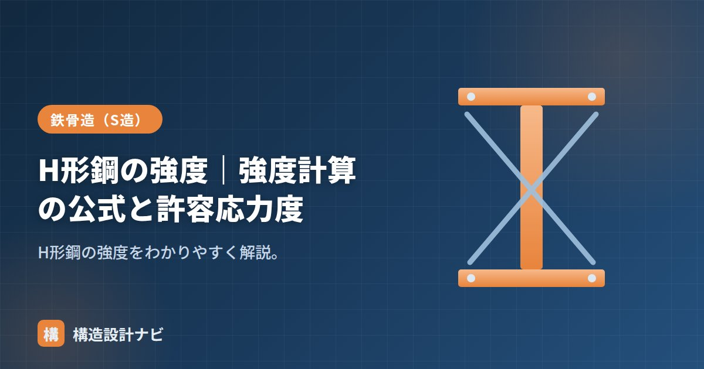

H形鋼の強度｜強度計算の公式と許容応力度

H形鋼の「強度」とは、部材が壊れたり許容範囲を超えて変形したりせずに、どれだけの曲げやせん断力に耐えられるかを示す性能のことです。単に「材料が硬い・柔らかい」という話ではなく、許容応力度という基準値と、断面形状から決まる断面性能の掛け合わせで評価します。ここでは、その計算方法の考え方を、実際の数値を使った計算例つきで整理します。
- 強度確認は「応力度 ≤ 許容応力度」が基本の考え方
- 曲げは Ma=fb×Z、せん断は Qa=fs×Aw で許容耐力を求める
- 実務では横座屈・幅厚比・たわみも合わせて断面を決める
強度計算の基本：応力度 ≤ 許容応力度
強度の確認は、部材に生じる応力度が許容応力度以下であることを確かめる作業です。許容応力度は基準強度Fから定まります（長期の目安）。
曲げの強度
曲げモーメントMによる応力度は、断面係数Zで決まります。許容できる曲げモーメント（許容曲げ耐力）は次式です。
この式が示す通り、同じ材質（同じF・fb）であれば、断面係数Zが大きいほど許容できる曲げモーメントも大きくなります。梁のサイズを検討する際、まず必要なMaを求め、それを満たすZを持つH形鋼を断面性能・単位重量一覧から探す、という手順が基本になります。
せん断の強度
せん断力Qは主にウェブが負担します。フランジは主に曲げモーメントを、ウェブは主にせん断力を負担するという役割分担が、H形鋼の合理的な断面構成の理由の一つです。
計算例：H-400×200×8×13（長期・SN400 F=235）
Zx＝1190cm³＝1.19×10⁶mm³、fb＝235/1.5≒157N/mm²。
この梁は長期で約187kN·mの曲げまで許容できる、という目安が得られます。せん断についても同様に、Aw≒400×8＝3200mm²、fs＝235/(1.5√3)≒90N/mm²とすると、Qa＝fs×Aw≒90×3200≒288kNとなり、この梁が長期に耐えられるせん断力の目安が求まります。
実務での注意点
特に細長い梁や、圧縮側フランジが横方向に拘束されていない梁では、断面が持つ本来の曲げ耐力まで発揮できず、横座屈によって早期に耐力が低下することがあります。この場合、許容曲げ応力度fbそのものを低減して計算する必要があり、単純にMa=fb×Zの式だけでは安全側の評価にならない点に注意が必要です。
審査対応で必ず聞かれるのが、Ma=fb×Zの計算だけで横座屈による低減を見ていないか、という点です。細長い梁ほどfbそのものが下がるため、断面係数の数値が大きくても安全側とは限らないと説明できるようにしておく必要があります。
まとめ
- 強度確認は「応力度 ≤ 許容応力度」。許容応力度は基準強度Fから定まる。
- 曲げは Ma=fb×Z、せん断は Qa=fs×Aw で許容耐力を求める。
- 計算例：H-400×200×8×13は長期で約187kN·mの曲げ、約288kNのせん断に耐える。
- 実務では横座屈・幅厚比・たわみも合わせて断面を決める。